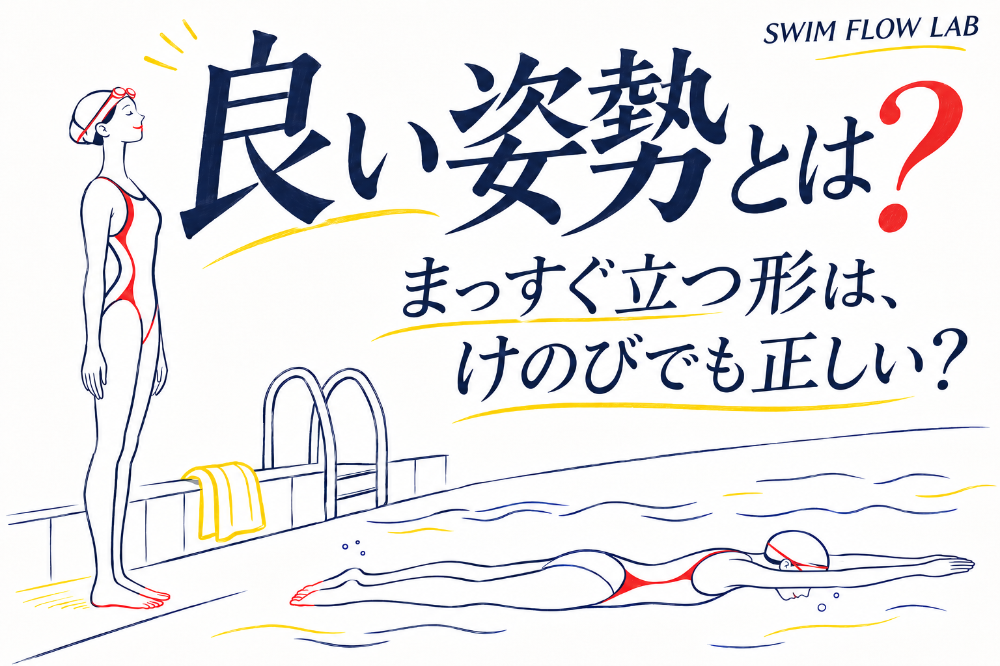
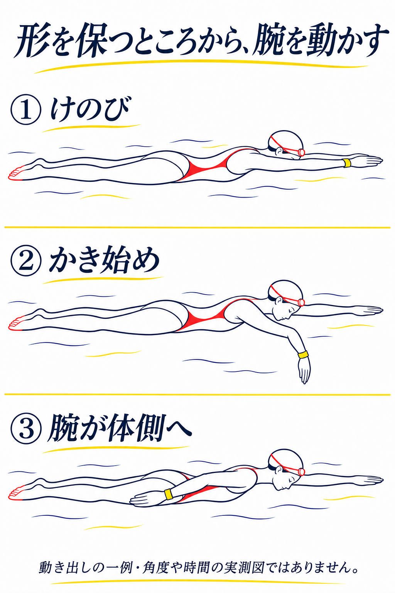
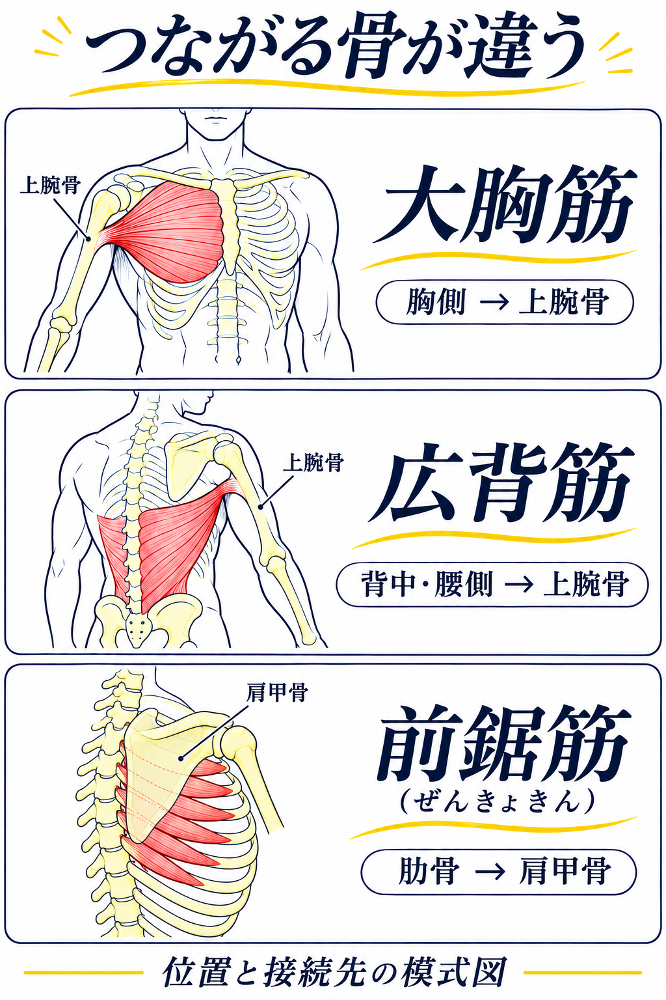
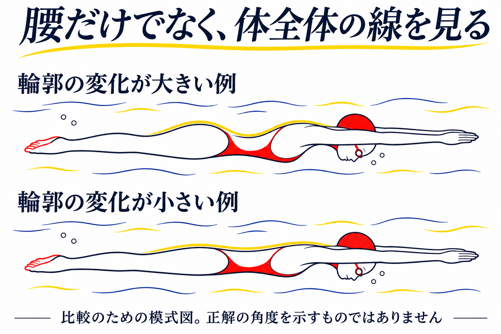
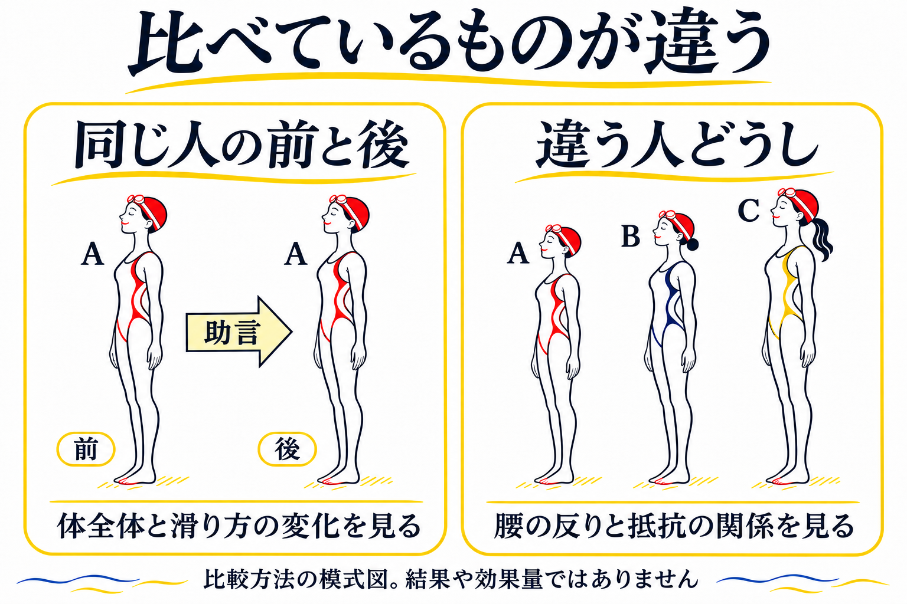

2026年11月24日 公開
良い姿勢とは？ まっすぐ立つ形は、けのびでも正しい？

「良い姿勢で泳ぎましょう」。そう言われたら、どんな形を思い浮かべますか。身長を測る時のように背を伸ばす。首を長くして、肩の力を抜く。その立ち姿を、そのまま横にすればよいのでしょうか。
この記事では、説明のための架空の泳者・葵さんと考えます。葵さんは両腕を頭の上へ伸ばした時、肩が上がって見えるのが気になりました。「肩を下げなければ」と頑張ると腕まで下がり、今度は水をかこうとして首まわりが力んでしまいます。
葵さんが望んでいるのは、けのびでは腕を頭の先へ伸ばした形で進み、泳ぎ出したら、その形から無理なく腕を動かせることです。良い姿勢を「決まった形を固めて守ること」と考えると、この二つがつながりません。まず「良い」の意味を整理し、肩を動かす仕組みを見てから、水中の姿勢を調べた研究へ進みます。
「良い」は、何が良い？
姿勢とは、頭・胴体・腕・脚が、どんな位置や向きにあるかということです。「背を伸ばして立つ」も、「腕を頭の先に伸ばして水に浮く」も姿勢です。止まって立っている時だけの言葉ではありません。［1］
日常の立ち姿勢について、米国国立医学図書館の一般向け解説には、頭を肩の上に置き、肩が骨盤の上にくるようにする、という目安があります。また、背骨には首・背中・腰に自然なカーブがあり、それを大きくしすぎず保つと説明されています。つまり、まっすぐ立つとは、背骨を棒のように平らにすることではありません。これは日常の姿勢への助言で、水泳の実験から出た正解ではありません。［1］
葵さんにとって、まず整理できるのは「背を伸ばすために、腰のカーブを全部消す必要はない」という点です。ただ、この立ち方の目安だけで、水中でも進みやすいと決まるわけではありません。
そこでこの記事では、良い姿勢を「行いたい動作のために、必要な形を保ちながら、必要な部分を動かせる姿勢」と捉えます。医学上の万能な正解を一つ決める定義ではなく、けのびから泳ぎへ考えを進めるための整理です。けのびでは腕を頭の先へ伸ばしておく。泳ぎ始めたら、その腕を動かす。動作が変われば、保つものも動かすものも変わります。
ここで「良い」の意味を分けてみます。葵さんの写真を見て「背すじが伸びて見える」と言うなら、外から見た形の話。「首がさっきより楽」と葵さんが言うなら、感じ方の話。「同じ時間で前より先へ進めた」と言うなら、動作の結果の話です。同じ「良くなった」でも、確かめていることが違います。
次の図では、「首を楽に」と意識した後に、腕まで下がったという最初の場面を見てください。葵さんの感じ方と、絵で見える腕の位置は、別々の情報です。

この場面で言えるのは、葵さんは首が楽になったと感じたが、腕の位置も変わったということです。筋肉の活動を測ったわけではありませんし、進む速さもまだ測っていません。「楽になった」は確かめられても、「けのび全体が良くなった」と一まとめにはできないのです。
葵さんが望んだのは、腕を伸ばしたまま楽にすることでした。そこで次に考えたいのは、楽にする時の目印です。腕を上げた時には、肩をどのように考えればよいのでしょうか。
形を保つことと、肩を固めることは違う
腕を上げると、肩甲骨も動く
葵さんは、腕を下ろして立つ時の肩を「良い位置」と覚えました。けれど、腕を頭の先へ伸ばした時まで、その肩の位置を守ろうとしてよいのでしょうか。
次の図の黄色は、背中の左右にある平たい骨、肩甲骨の目印です。腕を下ろした時と上げた時を見比べると、肩甲骨の向きも違います。腕を動かす時は、背中側の骨も一緒に動きます。

Bramanらは、肩に症状のない成人12人が腕を上げ下げする時の骨の動きを測りました。腕を頭上へ上げるにつれて、肩甲骨も向きを変えていました。腕だけが上がり、肩甲骨は立っていた時の位置に残る、という動作ではなかったのです。これは陸上の骨の動きの研究で、力みや泳ぐ速さを測ったものではありません。［2］
葵さんに戻ると、「肩が立っていた時より高く見える。だから力んでいる」という判定はできません。腕の位置が変われば、肩まわりも変わるからです。首が苦しいという本人の感じ方は確かめたい情報ですが、肩の高さとは分けて考えます。
では、伸ばした腕を体側へ動かす時は？
けのびは、壁を蹴った後、手足を動かさずに進む場面です。そこから泳ぎ始めれば、腕を頭の先に置き続けるわけにはいきません。葵さんは水を受けながら腕を体側へ動かしていきます。まず、黄色い手首の印がある腕を追ってください。

この腕を動かす時には、上腕の骨と、その受け皿になる肩甲骨の両方が関わります。つながっている骨の違いを、次の図で整理しましょう。

| 筋肉 | つながる場所 | この話での役割 |
|---|---|---|
| 大胸筋 | 鎖骨・胸骨・肋骨側から、上腕の骨へ | 腕を胸側へ寄せる。胸骨・肋骨側の線維は、前へ上げた腕を下ろす動きにも関わる。 |
| 広背筋 | 背中・腰・骨盤側などから、上腕の骨へ | 腕を体側へ寄せ、後方へ動かす。 |
| 前鋸筋（ぜんきょきん） | 脇の下の肋骨から、肩甲骨の内側へ | 肩甲骨を胸郭に沿って支え、腕を伸ばす時などに位置や向きを調整する。 |
表で分けたいのは、上腕の骨を動かす働きと、肩甲骨の位置・向きを調整する働きです。大胸筋と広背筋は上腕の骨につながっています。前鋸筋は肩甲骨につながっていて、腕を後ろへ引く主役として説明する筋肉ではありません。［5］［6］［7］
上腕の骨が接する関節の受け皿は、肩甲骨にあります。腕はこの関節でも動けるので、「肩甲骨が動かなければ腕は動かない」という意味ではありません。ただ、腕の位置が変わる時には、受け皿側の位置や向きも動作に関係します。図の黄色い肩甲骨を思い返すと、上腕だけを動かす話ではないことが分かります。
水泳で測った研究でも、この役割分担を考える手掛かりがあります。Pinkらは、肩痛のない競泳選手がクロールを泳ぐ時の筋電図と映像を調べ、大胸筋・広背筋の推進に関わる役割と、上部僧帽筋などの肩甲骨の位置調整を報告しています。これは筋肉の働き方を観察した研究で、「この筋肉を意識して強く収縮させると速くなる」という指導の比較ではありません。［8］
肩をすくめたままだと、かきにくい？
筆者が指導中に気になるのは、水を強く押そうとして、首・肩に力が入っているように見える泳者です。肩を高くした形のまま腕を引こうとしているようにも見えます。これは現場での観察で、どの筋肉がどれだけ活動したかを測った結果ではありません。
解剖学から考えたいのは、肩が高いことそのものより、その位置を力んで守り続け、腕の動きに合わせた調整を妨げていないかです。肩甲帯をすくめた位置に保とうとし続ければ、自由に調整できる時とは動き方が変わる可能性があります。大胸筋・広背筋が活動していても、動作全体としてかきにくい、という説明は考えられます。
ただし、「肩を上げると大胸筋・広背筋の力が落ちる」と決めることはできません。両筋は腕が上がった位置からも腕を動かしますし、肩をすくめる筋肉と同じ関節を正反対に引く、単純な綱引きでもありません。ここで述べているのは、体のつながりから考えた可能性です。葵さんに起きているかは、実際の動きと本人の感じ方を見て確かめる必要があります。
葵さんが次に試す時、「肩を低くして固定する」ことを目標にすると、固定する位置が変わるだけかもしれません。観察したいのは、けのびで腕を伸ばした状態から、泳ぎ出して腕を動かす状態へ移れるか、そして首まわりの力みを本人がどう感じるかです。具体的には、普段どおりの楽な泳ぎで、けのびから最初の数かきへ移る間に首の力みが増えるか、腕を動かしにくく感じるかを分けて見ます。これは本稿の観察案で、効果が実証された練習法ではありません。肩を下げる意識でかえって窮屈になるなら、その合図は続けず、いったん普段の泳ぎに戻して比べます。
手首や足首を固める場面も、筆者が現場で気にしている点です。ただ、肩の説明だけで「すべての関節は力を抜くほどよい」とは結論できません。手首なら水を受ける手の向き、足首ならけのびとキックで求める動きが違います。それぞれの役割を分けて検討する必要があります。
この章で整理できたのは、形を保つことと、肩まわりを固め続けることは同じではない、という点です。では、体全体の形はどう確かめればよいのでしょう。肩の次に気になりやすい「腰の反り」を通して、見た目と水中での結果をつなげます。
次の図では、胸・腰・お尻へ続く輪郭をたどってください。腰だけを平らにする、という見方から少し離れ、前後の部分とのつながりを見ます。下の形が全員の正解という図ではありません。

葵さんが「あの人の腰の形を写せばよい」と考えた時、知りたいのは二つです。人どうしの腰の違いで進みやすさが決まるのか。そして、自分の形を変えたら何が変わるのか。次は、その違いを研究から読み解きます。
腰を平らにすれば、進みやすい？
葵さんは、自分より腰が反っていない人を見て、「あの形にすればよいのかな」と考えます。でも、ここには二つの問いがあります。「腰の反りが大きい人は抵抗も大きいか」と、「自分が形を変えたら滑り方も変わるか」です。
次の図の右は、A・B・Cという別の人どうし。左は、同じAさんの変更前と変更後です。最初に右側の、人どうしを比べる研究から見てみましょう。

他人より反っていると、不利？
奈良らは、男子大学競泳選手23人を調べました。陸上でうつぶせになり、腕を頭上へ伸ばした時の腰の角度を測り、水面近くで体を引いた時の抵抗から計算した値と比べています。この比較用の値が「抵抗係数」です。［4］
結果は、腰の反りが大きい人ほど抵抗係数も大きくなる、という統計的に有意な関係は見つかりませんでした。調べた四つの速さのいずれでも同じでした。つまり、この23人では、陸上で測った腰の反りが大きいほど、水中で測って計算した抵抗の指標も大きくなる、とは確認できなかったのです。
葵さんが考え直せるのは、「他の人より腰が反っているから、自分の方が水を受けやすいはず」という採点です。この研究から、そう決めることはできません。「あの人の腰と違う」を、そのまま「自分のけのびが悪い」へつなげない。それが、この結果の意味です。
では、「腰はどんな形でもよい」と分かったのでしょうか。そこまでは言えません。研究では水中の腰の角度を測っておらず、同じ人の腰を変えた前後も比べていないためです。他人との違いでは答えが出なくても、自分の形を変えた前後を調べる問いは残ります。今度は図の左、同じ人の前後へ進みます。
自分の形を見直すと、何が変わる？
Papicらの研究では、全国レベルの泳者11人が自分の映像を見ながら、個別の助言を受けました。その前後で、水深約1mから壁を蹴り、手足を動かさず滑る1.5秒間を調べています。［3］
この区間の平均速度は、助言前の毎秒1.80mから、助言後は毎秒1.86mになりました。「毎秒」は1秒あたりに進む距離の表し方で、ここでは1.5秒の区間から求めた速度を、11人で平均しています。助言後には、同じ長さの時間で前より先へ進むという結果が、グループの平均で見られたということです。全員が同じ量だけ変わったわけではありません。
この研究が確かめたのは、他人と同じ腰の形になったかではなく、自分への個別の助言の前後でした。葵さんの場面に当てはめて考えるなら、「見本に近づいたか」に加えて、意識を変えた前後で、自分の形はどう変わり、滑り方はどう変わったかという問いを持てます。これは研究から得た観察の考え方で、葵さんにも同じ効果が出るという予測ではありません。
たとえば葵さんは、首が楽になった時に腕まで下がっていました。感じ方だけで終えず映像も見れば、変わった形を具体的に見つけられます。さらに滑り方を比べて初めて、「楽になった」と「進み方が変わった」を区別できます。Papicらが測ったのはこの滑る速度で、本人の楽さではありませんでした。
ここで「腰を平らにしたから速くなった」と結論を縮めないことも大切です。助言は人ごとに複数の点へ行われ、助言を受けない対照群もありません。腰だけの修正効果には分けられず、長く続く効果やレースのタイムも測っていません。研究が示した短い区間の変化と、葵さんの一つの意識を同じものにはできないのです。
奈良らが調べたのは水面近くで引いた時の抵抗の指標、Papicらが調べたのは水深約1mで壁を蹴った後の滑る速度です。条件も測ったものも違いますが、どちらも「全員の腰をこの形にすればよい」という答えは出していません。
二つの研究を読むと、葵さんの問いは具体的になります。「あの人と同じ腰にしなければ」から、「自分は何を変え、その前後で何が変わったのか」へ。これは他人を見本にする練習が劣るという比較結果ではありません。腰の見た目一つで採点せず、自分の変更も結果まで確かめる、という読み取りです。
葵さんの「良くなった」を言い直す
仮例の続きを考えます。別の一回に、葵さんは腕の位置も確かめました。映像では、最初に首の力みを感じていた時と同じように、腕が頭の先へ伸びています。そのうえで、本人は「今度は首も楽」と言いました。ここで言えるのは、最初の腕の位置を保ちながら、本人は首が楽になったと感じたということです。けのびの形と本人の楽さについては、観察した範囲でそろいました。ただし、その後に腕をかき始める動きは、この一回ではまだ確かめていません。
ただし、その一回では滑る速さを測っていません。したがって、「首の楽さと腕の位置については良い変化だった」とは言えても、「速く滑れる姿勢になった」とはまだ言えません。もし次に遠くへ進んでも、その時だけ強く壁を蹴っていたなら、その勢いを姿勢の効果に混ぜないことが必要です。
最初に葵さんは、「まっすぐ立つ良い姿勢を横にすれば、良いけのびになるはず」と考えていました。今なら、立つ時に覚えた自然なカーブを、水中で守るべき唯一の角度とは受け取らないでしょう。腕を頭上へ移せば肩まわりも動くので、肩を立つ時の位置へ戻せたかでも採点しません。
立つ時の形を、そのままけのびの正解にすることはできません。けのびでは、腕を伸ばした時の体全体の形を見て、本人の楽さと進んだ結果を分けて確かめます。泳ぎ出した後は、その形を守り続けるのではなく、腕の動きに合わせて肩まわりを調整できるかも見ます。葵さんの変化なら、「腕の位置は保てた。首も楽だった。速さはまだ測っていない」。こう言えることが、ただ「姿勢が良くなった」で済ませることとの違いです。
頭の向きに絞った話は、No.6「けのびで見るのは前？ 下？」につながります。体全体の中で、頭の位置を変えると何が変わるのかを考える補完記事です。